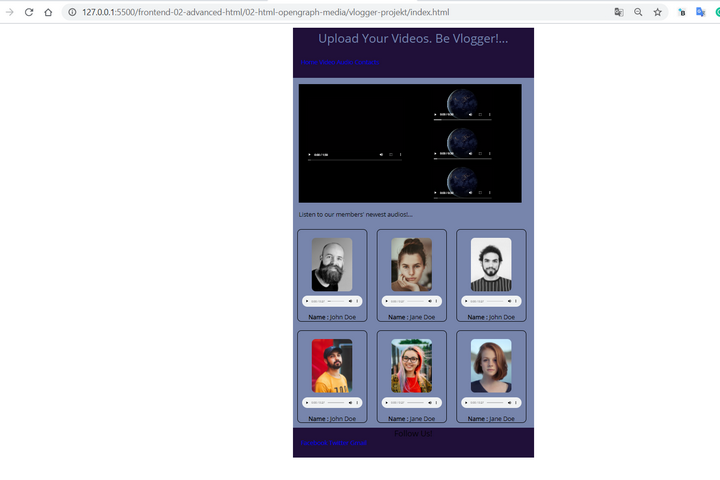
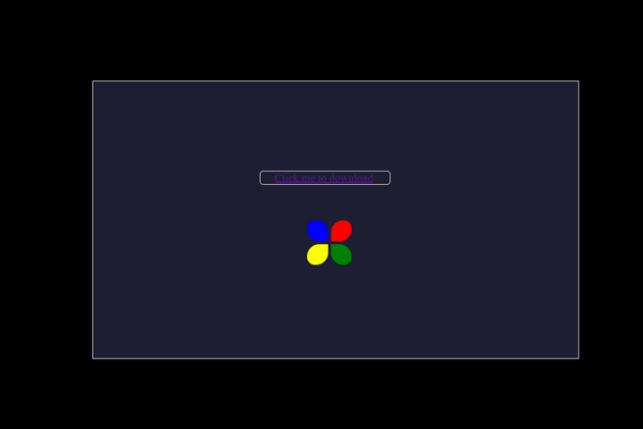
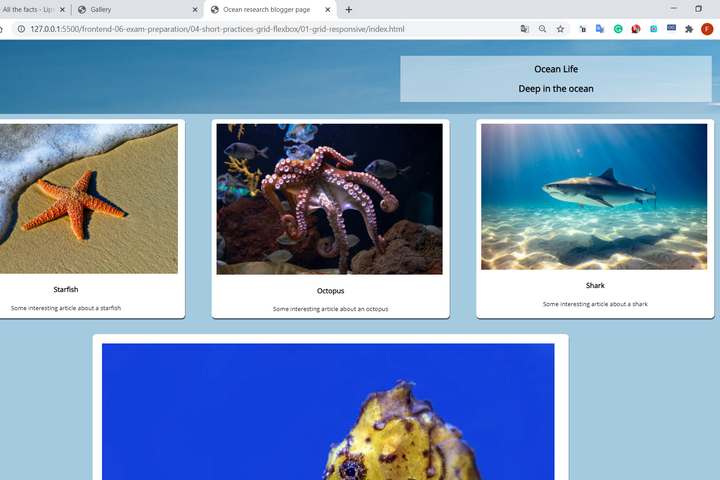

Vlogger project
A fejlesztő egy korai munkája. Az oldal lényegében egy vlogger videóit és hanganyagait foglalja össze egy oldalon. A szerző nem túl büszke a művére, ráadásul még csak nem is reszponzív...
Animated downloader project
Ez egy animációs munka volt. Órákat töltött a fejlesztő a gép előtt, mert az a nyamvadt rotor az istenért nem akart megmozdulni. Aztán persze megmozdult, ezzel is emelve az elkészült műalkotás értékét.
Ocean Life project
A legutolsó munkák egyike. Három méretben működik, szemmel látható rajta az alany fejlődése. Talán egyszer még front-end fejlesztő is válhat belőle...